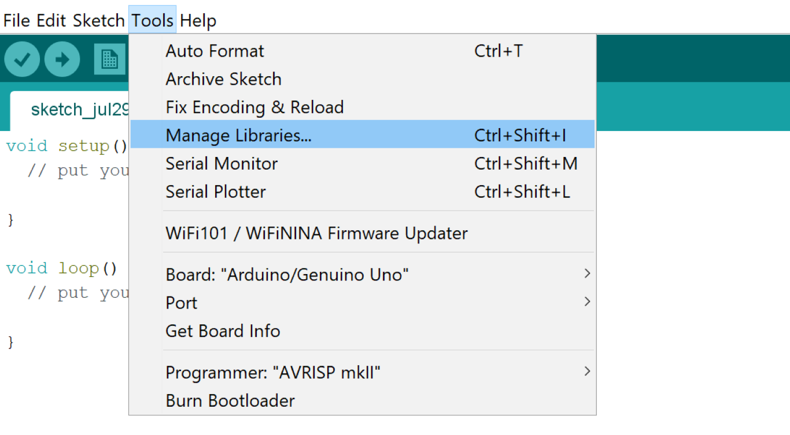
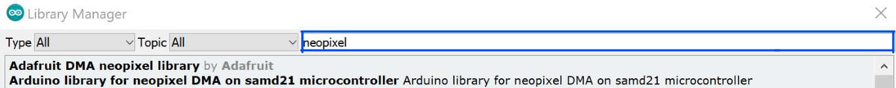

Code Libraries
What are Code Libraries?
Some sensors and output devices are complex. It may be a long and complicated process to code these sensors with Arduino’s basic functions (digitalRead, digitalWrite, etc.) on your own. To make your life easier, there are groups of functions made specially for these components called libraries. If you find an interesting sensor online, but you aren’t sure how to use it you may want to find a code library for it. One example of a library is the servo library, which includes functions that control servo motors.
How Do I Download a Code Library?
To download a library in the Arduino IDE, click “Tools > Manage Libraries” or press ctrl + shift + i (Windows) or cmd + shift + i (Mac).
Next, type the name of the library you would like to download in the search bar. In this case, I am looking for the “Adafruit NeoPixel” library.
Once you have found the library you want to install, hover your mouse over it then click “Install”
And that’s it! Now you can install any of the code libraries available to you!
How Do I Use a Code Library?
To use a code library, you first need to include it in your code. To do this, write the following before the void setup function:
#include <libraryName.h>
For example, if you want to include the servo library, write:
#include <Servo.h>
void setup(){
...
You might be wondering, “What new code can I use with this library?” To find out, look up “(insert library name here) library arduino” on google. For example, for the servo library, you could lookup “servo library arduino”. You should find a guide that describes how to use the library and describes each function within it.